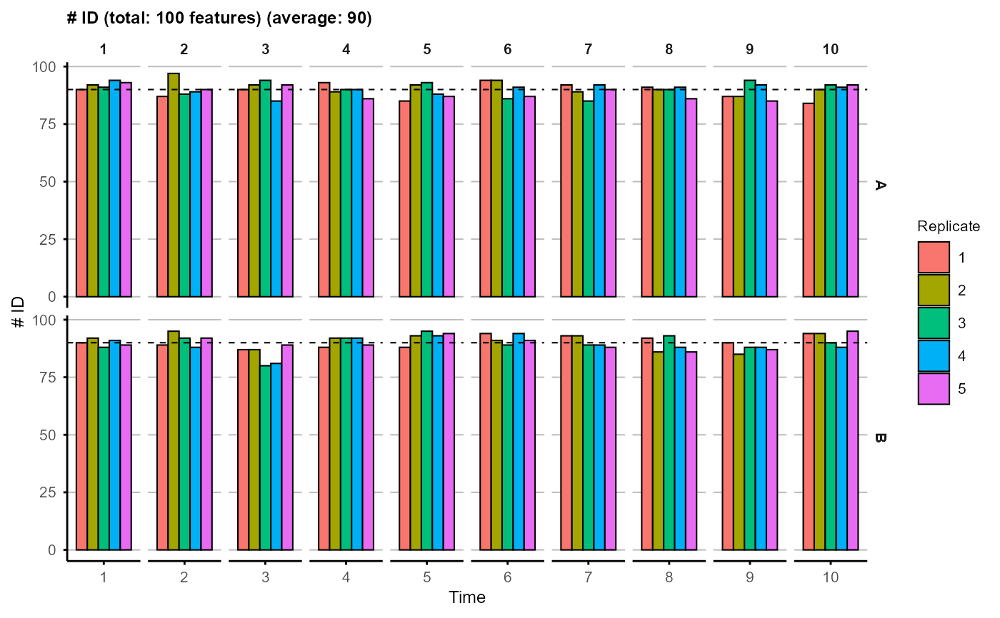
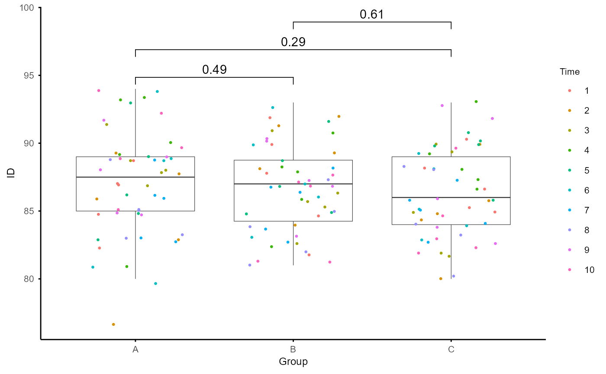

Plot the number of identified features (i.e., features with non-missing values) for each sample
Arguments
- se_obj
A SummarizedExperiment object, produced by
create_input()function, containing the abundance data and associated sample information.- fontsize
(Optional) An integer specifying the font size for the plot (default is 8).
- signif
(Optional) A logical value indicating whether to perform significance testing between groups and add significance annotations to the plot (default is FALSE).
- ...
Additional arguments to be passed to
ggpubr::stat_compare_means()whensignifis TRUE, for customizing the significance annotations.
Value
A plot showing the ID number for each sample, with a dashed line indicating the average number across all samples. And a boxplot comparing the ID number between groups, with optional significance annotations.
Examples
# simulate data with random missing values
na_data <- matrix(rnorm(1500), nrow = 100, ncol = 150)
na_data[sample(length(na_data), size = 2000)] <- NA
na_data <- data.frame(Feature = paste0("Feature", 1:100), na_data)
colnames(na_data)[-1] <- paste0("Sample", 1:150)
na_obj <- create_input(na_data,
data.frame(Sample = paste0("Sample", 1:150),
Time = rep(rep(1:10, each = 5), 3),
Group = rep(c("A", "B", "C"), each = 50),
Replicate = rep(1:5, 30)))
#> No Subject column specified. Samples treated as independent. For repeated-measures designs, set subject_col to the column identifying biological subjects.
#> Converting 'Group' column to factor. Default order is alphabetical.
#> Converting 'Replicate' column to factor. Default order is numerical.
plot_ID(na_obj, signif = TRUE)
#> `stat_compare_means()` with `comparisons` displays *unadjusted* p-values (no correction for multiple comparisons).
#> ℹ For p-values adjusted for multiple comparisons, use `geom_pwc()`, or `stat_pvalue_manual()` together with `compare_means(..., p.adjust.method = )`.
#> This message is displayed once per session.
#> $overview

#>
#> $comparison

#>